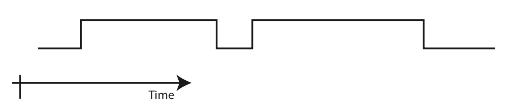
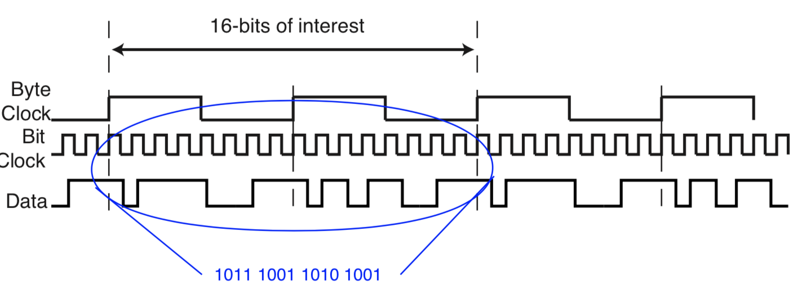

It is the least complex electrical interface between digital devices.
Use a single wire (plus ground) to carry information - one symbol (one bit in the simplest case) at a time.
wires get expensive as you increase the distance, if any one breaks the communication is broken
thickness of the wire is also less which makes it convenient to carry around and use
The standard for communication between the two connected devices should match for Serial interfacing to make any sense
Communication Context
context
Duplexing in Channels
Simplex: unidirectional as shown below
Half Duplex: bidirectional, one-way at a time, as shown below
Phones for a long while worked like this, to preserve bandwidth, and there was only uni-directional flow of data, Walkie-Talkies have the Push to Talk buttons which generally use Half Duplex
Eg: a productive lecture is a half-duplex where instructor talks and student listens and vice versa, a conversation between 2 people
Full Duplex: simultaneous bidirectional, as shown below
sometimes interference can lead to crosstalk but there are ways to minimise this
context
Classes of Synchronization
Bit Synchronization: How long is each bit? and Where do bits start (or stop)? These two components may be considered separately.
Bit Rate Synchronization: The time that elapses between the start of one bit and the start of the next bit.
Phase Synchronization: Given that the rate is known, how is the mid-point (or start) of each (or any) bit found. This amounts to determining the phase relationship between the local clock and the clock used to transmit the data originally.
if you sample them at the wrong time then you would get garbage data
Byte Synchronization: Where do bytes start and stop?
Block Synchronization: Where do blocks start and stop?
Bit Synchronization
EX 1
Given an input signal as shown below:

How many bits are represented? Unknown,
this could also be back to back zeros, or
it could be part of a control signal
What are their values? Unknown
What do they mean? Unknown
are those bits ints or chars or etc
EX 2
Given an input signal and a clock as shown below: (The clock provides one way to get the bit timing. In this case, one edge of each clock period is used to sample the data line.)
How many bits are represented? 8
What are their values? Unknown (Phase Synchronization required.)
Rising edge? 01101110
Falling edge? 11111100
its not just reversed, its more than that, you might not detect the edges as they are transmitted
Select edge to sample at the most correct time (if possible).
What do they mean? Unknown
could be hex or sth else
EX3
Given an input signal and a clock as shown below: The clock provides one way to get the bit timing, if we assume rising edge then bit synchronization has been attained and the bits can be reliably interpreted. 16, - 0110111001101010
synch3
What do they mean? Unknown
Where does a byte start?
If one byte is read the following values are read depending one where the first bit is assumed to be located - Bit 1 Hex(6e), Bit 2 Hex(dc), Bit 3 Hex(b9) Bit 4 Hex(73) etc.
Need a convention to find the start of a byte.
Byte Synchronization
Given an input signal and a clock as shown below: The clock provides one way to get the bit timing, if we assume rising edge then bit synchronization has been attained and the bits can be reliably interpreted. 16, - 0110111001101010 Further assume that by convention synchronization information permits bytes to be detected 0xB9, 0xA9
synch4
What do the bytes mean? Unknown
What do they mean: ASCII (American Standard Code for Information Interchange)? Part of a block? …
Terminology
Bit per second (Bit Rate) vs Baud (or Baud Rate).
Bit Rate: The number of bits that can be transferred per second over a channel.
Baud Rate: The maximum number of symbols that can be transferred per second over a channel.
Consider the following figure
We generally assume that wire can only be 0 or 1, but in the above you can see how the diagram of how “multiple” bits are transferred at the same time, using different voltage levels
Implementation Issues - Data Representation as Electrical Signals
Note: Coding schemes that do not have a zero rest point are referred to as an NRZ (Non-Return-to-Zero) code.
One could characterize on parameters such as: Ease of design, the presence of a DC component, use of bandwidth and synchronization possibilities.
(Also in Wakerly)
NRZ - Non-Return-to-Zero
ON/OFF: Oscillates between 0V and XV (where X=3.3 or 5 or 12)
Bipolar: Oscillates between -YV to YV (where Y=3.3 or 5 or 12)
quite better because you see the current change direction
NRZI(inverted or interval): 1 means EDGE
how is this synchronized: we need a clock signal, because you need to know where the bits start and stop
RZ - Return-to-Zero
ON/OFF: If you get a long list of 0’s then you lose synchronization
not as big a problem in real life because we alternate often
Manchester (Split Phase): 0 is represented by a rising edge, and 1 is represented by a falling edge, i.e. always goes to zero
two views: where they actually switch the bits, moreover some accepted standards have the switched representations
Why do you care about middle of bits: Arrival of clock edge may not align with the arrival of data. so when they introduced “middle” of bit examples is to allow for a clock recovery
you can transmit just the data and design a circuit that allows for the clock to be synced/“calculated”
The problem with this is if you send a bunch of 1’s then they can also be read as a bunch of 0’s thus causing you to fall out of sync, BUT if you sent a pre-determined pattern of bits that both the receiver and sender know about at the start of signal then there could be a way to actually sync
This also sucks because there are a lot of transitions, which sucks for wireless transmissions in preserving accuracy moreover
This also sucks because it consumes more power, because the actual energy consumed in a computer is in charging and discharging capacitors and not in keeping a signal just high or just low
same way a car works, if you keep it at a constant speed it consumes less “fuel”, as opposed to starting and stopping
Works best for fibre-optic and wired connection
Differential: Encode transitions instead of encoding values, 0 means EDGE
Doesn’t matter what you start with
how is this synchronized: we need a clock signal, because you need to know where the bits start and stop
Used by USB: they say they use NRZI, but they actually use Differential
the original USB used to send the signal, and its inversion because it had noise immunity, and had 4 wires if you included ground
One-Byte Serial Interface
Transmit
serial1
Shift registers are used to convert between serial and parallel data streams.
Pretty much matches what we have seen with parallel interfacing but with shift registers, it might look different because the image is p old and hasn’t been updated and coloured SR_{in}, SR_{out} act as an intermediary
Data is loaded into XMIT (Transmit) register (in parallel) from the system bus.
When SR_{out} (i.e. the Output Shift Register) is idle, data is transferred from XMIT to SR_{out} (in parallel). Data is shifted out serially by the Tx (Transmit) clock.
In the figures below, two alternatives for the transmit clock are shown.
Asynchronous
Synchronous
Receive
Data is shifted into SR_{in} (Input Shift Register) serially by the Rx (Receiver) Clock.
When SR_{in} is full data is transferred into the RCV (Receive) register (in parallel)
Data is transferred (in parallel) to the system bus.
In the figures below, two alternatives for the receive clock are shown.
Asynchronous
Synchronous
Processor Side of One-Byte Serial Interface
serial1busa
In the bottom right, you see
Reality Checks
There are a number of issues to resolve.
Time:
How does the receiver really recognize bits, bytes (or later blocks)? - what counts as end of of data etc
Given a clock how do you send/receive the data (next)?
How do you get the clock (later)?
In the case of serial communication, slightly different meanings of Synchronous and Asynchronous:
Synchronous: Both Rx and Tx use the same clock (frequency and phase). - they don’t need to have the same physical wire, but they should be able to decipher the clock from the data
Asynchronous: $Rx and Tx have independent clocks that have the same (or similar) frequencies.
Errors:
Corrupted data received due to noise on the channel.
Erroneous data caused by timing problems (e.g., slow reading, clocking differences)
Clocks/Time
clocks
The Transmit and Receive clocks on a given interface do not have to be at the same data rate. (They usually are at the same rate.)
The serial interface figures leave the clock as external to the interface.
In some cases a local oscillator is used for the transmit clock and may be used for the receive clock (e.g., asynchronous).
There are 4 clocks in the actual system, at both ends, moreover they do not need to have the same frequencies. There might be some limiting bandwidth so, we set up our routers to be download heavy and upload light, because we want to allocate the bandwidth efficiently
Time and Data at the Transmitter and Receiver
serclock
Why are there two registers in each direction?
Receive: Processor may not pick up the data fast enough (Overrun, if mismatch in performance between the 2 connected devices)
Transmit: Processor may not respond fast enough to keep serial data stream uninterrupted.
Even though the shift register produces a byte output, it is only valid for that one bit time when reading from the CPU.
It gives the CPU some more time, to not just be reading bit by bit but, by doing byte level operations.
Protocols and Standards
Before Communication Begins
How do two systems that need to exchange information agree on a common language. The two ends must agree on the following issues:
Communication Protocol: A set of rules for making connections and transferring information.
Standards - Who is in Charge?
The protocols associated with communication structures are often developed in a sequence similar to the one listed below.
Industry specification: some company (or consortium of organizations) defines the specification for use with their products.
A national level organization (e.g., ANSI - American National Standards Institute) may sanction this standard (or a slightly modified version of the standard). The country organization may opt for input from a technical organization (e.g., IEEE).
Eventually there may be need for an international standard. International standards are often sanctioned by the International Standards Organization (ISO).
Finally, once the standard has been accepted it will be sanctioned by ITU-T (International Telegraph Union - Telecommunication standardization sector) formerly known as CCITT (Comite Consultatif International Telephonique et Telegraphique), the international organization representing the telephone companies and is the one responsible for CHECKSUMs.
Serial Protocols
synchasynch
Asynchronous Protocols
asynchclock
Assume both ends of the channel know the correct (nominal) data rate.
Must convey the phase of the tx clock to the receiver.
The oscillator is now responsible for generating one sending clock, one receiving clock
serial2a
Line idles high, we drop the line low for one cycle i.e. start bit, then one by one the bits are transmitted and then 1.5 stop bits i.e. signal is high
Bit Synchronization
Issues
The data cannot be clocked into the receiver using the same clock as used for
transmission. That is, there is no wire connecting the clocks.
The designer (and user) of the receiver has only a nominal transmission frequency specification.
There is no (direct) phase synchronization between the transmit and receive clocks.
The clock generators in the source and destinations do not necessarily have the same drift coefficients. (Time or Temperature)
Design principle: The structure is designed assuming that the receiver has a reasonable estimate of where the bit should start (phase synchronization), and the goal is to sample the bit in the middle. Why?
To sample in the middle of the bit the following design characteristics are required.
A reasonably accurate specification for the nominal frequency (e.g., (10000 \pm 5\%) Hz.)
used to find the next bit given the current bit.
A way to extract the phase of the clock. (described later)
Design Example
Detailed clock design example
The figure assumes correct frequencies but Rx1, Rx2 and Rx3 differ in phase synchronization with the transmitter.
If we have multiples of the transmitter frequency available at the receiver, then we can more accurately estimate the middle of the bit. (16 or 32 are multiples often used)
Bit Synchronization
sixteen
Example of an Asynchronous Frame
serial2
Bit -1 (Start Bit). Must have a value of 0 and indicates that a data byte is to start. Bit 0-7 Data bit values
Bit 7 may also be a parity bit (Space (Parity Bit = 0), Mark (Parity Bit = 1), Even, or Odd)
Bit 8 (and perhaps 9) Stop bit:
Must have a value 1 to indicate end of data
Value of 1 assures that start bit will have a falling edge at the start of it.
Between characters. The protocol leaves the line as a ‘1’ when there is no data to transmit.
Bit Sampling
Possible to implement an asynchronous protocol at the receiver with a free-running local oscillator n times the data rate. (Assume n=16, 8-bits of data, and no parity for this example.)
Step
Counter
Operation
1
0x0
Wait for start of start bit (falling edge)
2
0..7
Wait for 0.5 bit times (8 clock periods)
3
8
Verify that serial data line is still 0.
4
0x9..0x18
Wait 16 clock times (1 bit time) and sample the first bit
5
0xi9..0x(i + 1)8
Wait 16 clock times (1 bit time) and sample the ith bit
6
0x79..0x88
Wait 16 clock times (1 bit time) and sample the last bit (bit b7)
8
0x89..0x98
Wait 16 clock times (1 bit time)
9
0x98
If data = 0 then framing error (stop bit has wrong value).
10
0x99..0xA8 (If req’d)
If there
11
0x0
Indicate that the byte has been received go to step 1.
Middle of first start bit
1.5 stop bit is 0xA0
serial3
Sample in the middle of each bit.
Note: since the start bit time and the bit structure is known, Byte synchronization is inherent.
Note: in this case 1 stop bit is tested by considering the line’s value at clock 0x98. If there were 2 stop bits, there would be an additional test at 0xA8. If there were 1.5 stop bits the additional test would be at clock step 0xA0.
Impact of Clock Errors
If the clock rate drift causes the sample point to change by more than 0.5 bits in 10 (1 start, 8 data and 1 stop bit), the information detected will be corrupted.
- Therefore the frequencies of the derived clocks at the receiver and the transmitter must differ by no more than 5% (if there is a 10 bit frame)
- Note impact on the required clock precision if the number of data bits is increased.
Just increasing the clock speed won’t fix it, since we have the same bit being read twice
Clock Shift
\Delta T = |\frac{1}{f_{Rx}} - \frac{1}{f_{Tx}}|
If B\times\Delta T > \frac{1}{2} \times \frac{1}{f_{Tx}} then the shift at the end of B bits is larger than 0.5 bits.
One Eight-Bit Implementation - Overhead
Overhead: (to be consistent with the previous definition) is \frac{\text{Number of non data bits in a frame}}{\text{Total number bits in a frame}}
There is the following overhead (per byte of data).
Worst case: 7 data bits, 1 parity bit, 1 start bit and 2 stop bits, or 4 non-data bits for every 7 bits of data. (4/11 or 36%)
Best case: 8 bits of data, 1 start bit, and 1 stop bit or 2 non-data bits for every 8 bits of data. (2/10 or 20%)
Some Errors
Framing Error: An incorrect frame has been detected. In the case of one-byte asynchronous transfers, the indication of a framing problem is that the stop bit is incorrect (possible baud rate error) .
Overrun Error: In a serial communication system, the data at the transmitter and receiver is transferred at a time convenient to the controlling processor. As a result it may be that the serial data will arrive too quickly for the receiver to process the data. It is also possible that the transmitter will be sending data faster than the serial channel can transfer the data. In either case, some data may be overrun by the data following it in the channel. This is an overrun error. There are two special cases.
Receive Overrun Error: At the receiver, incoming data has overwritten data in SRin or RCV register.
Transmit Overrun Error: Resulting from the CPU or the device writing to the transmit buffer before the current content of the transmit buffer has been transmitted.
Parity Error: The parity of the received data and the value of the parity bit do not match
Start Bit Error: when the line is sampled one half of a bit time after the edge of the start bit is detected, the value is not zero. This probably indicates that a false start bit has been detected, alternatively there may be some error in the assumed bit rate.
A stop bit is essentially a MARK OR A SPACE BIT depending on what you choose
Retransmission is the only one way to fix it, and it could even arise if your “stop” bit is incorrect but the data is correct
Impact of Parity Selection
The selection of Even or Odd parity for a given application may depend on the character set usage. For example:
Some noise appears as short duration pulses. These pulses may imitate some of the timing of one or more bits.
Consider the cases shown in the figure below.
Delete - 0x7F: In the even parity version in the presence of short noise pulses: 8 bits (7 plus parity) a single start bit followed by all 1s looks like a correct even-parity character. Howver, it would be quite unlikely that the signal pattern for the odd parity version of Delete would occur in the same environment.
∼ - 0x7E: In this case, the even parity version is less likely an error than the odd parity version. Thus there is no ideal parity.
delete
The noise in these signals could lead to one deleting the next character when there wasn’t actually such a signal
Special Character
Break (and long break) … Forces a framing error.
A normal break is usually a fixed duration in a given system. In some cases (with slow data rates) this break may appear to be some form of data that starts with a number of zeros. A long break often stays asserted as long as the user presses the break key, this assures that it will be a framing error.
An example of out-of-band signalling - and there is no way you can confuse it with any data.
Low for 2 frames, and at some point it is going to get a framing error on the receiving end. This way you can the receiver to a known state. It will not start looking for the next start bit until the line goes back to idle. By doing this we can guarantee this way that can re-sync
How would you know the receiver and transmitter are out of sync?
You would have generally have information in both directions, and there might even be some control signals
Note: Impact of Stop Bit Mismatch
Consider the situation where the transmitter and the receiver use different assumptions about the number of stop bits. (Since all systems use 1 start bit there can be no confusion on this part of the protocol).
If SB_{Tx} = SB_{Rx} There is not problem
If SB_{Tx} > SB_{Rx} There may be a bit of extra idle time between consecutive bytes, but communication will not be a problem.
If SB_{Tx} < SB_{Rx} There is a problem. If the
transmitter ever sends consecutive bytes as close together as possible (SB_{Tx} bit times separation) then the receiver will be looking for a stop bit (a 1) where there is a start bit (a 0) and should indicate a framing error. Even in this case we care not sure to detect an error because the line might just go idle, and we will detect the idle state as the stop bit
Note: If the channel is bidirectional, then in most cases the number of stop bits used for the transmit and receive timing will be the same on one end of the channel. Hence if there is a discrepancy, one direction of communication will have the SB_{Tx} < SB_{Rx} relationship.
Asynchronous Serial Communication Synchronization Summary
Synchronization
Technique
Comments
Bit Synchronization:Bit Rate
by agreement
May also be done by software detection.
Bit Synchronization:Phase
start/stop bits
The receiver detects falling edge to determine where the first bit starts.
Byte Synchronization
start/stop bits
Since only 1 byte per frame, once bit 0 has been detected, the byte is also known.
Block Synchronization
N/A
Some of the techniques described in later sec- tions could be used to provide Block Synchro- nization.
Synchronous Protocols
Synchronous protocols use a common clock at the source and destination
A common clock can be implemented in two different ways:
A dedicated clock signal can be shared (limits distances and data rates)
Data can be encoded to allow inference of the clock (typically Manchester encoding)
Advantages:
Reduces overhead (e.g., no start / stop bits) BUT it introduces other overhead
Eliminates problems related to clock skew, and you’re constantly syncing
Increases data transmission speeds:
Asynchronous RS-232 maximum of 19,200 bps (115,200 bps over short distances)
Synchronous rates can exceed 10 Gbps - high speed, ideal netflix connection
Clocking of Synchronous Serial Communication
genericsync
Note:
Clock and wire length. If the distances are too large, then the clock may not arrive at each input at the correct time. (Discussed in detail later in the term.)
As long as you have a well synchronized global clock, BUT it has to reach all the registers at the same fucking time. You can establish some timing patterns to ensure that: PLL or clock trees (where the distance of clock source and destinations is the same for all)
The middle register could be going to other output devices, and is there to show that we can have more than one register to store stuff
Synchronous Serial Communication Connections
synchclock
You connect the local oscillator to the transmit signal, and that becomes the receive signal for the other side. General convention is that transmit sends signal
The lines inside the channel are “Manchester encoded” and not the standard on off encoding
Synchronous Serial Communication Connections
serial14
We are not going to discuss clock extraction or sync detection because that is almost a graduate level course
The Queue’s exist to ensure that none of the data is lost, because the CPU might not always be ready to service the register.
All the control signals are not shown, and there might even be some signals that reset the queue’s
Typical Synchronous Port Structure
Of Note:
The receive clock is extracted from the input signal. The edges on the data line are used to adjust the frequency and phase of a local oscillator.
No internal clock for the receiver. Although, there be an oscillator for use in clock recovery, (shown in synchronous2.png).
Since there are no start/stop bits, extra hardware is required for synchronization.
Since higher speeds are possible, FIFO queues may be required. (Gaps or flow-control may
be difficult or not possible at this level).
Typical Synchronous Port Structure
manchester1
Every manchester bit, starts at one point and ends at a different point, i.e. the encoding for ‘1’(1 to 0) starts at 1 and ends at 0, and ‘0’ starts at 0 and end at 1, this way when we detect that our assumed edge is wrong we can resynchronize
Only when we have a transition from 0 to 1 or 1 to 0, and we get the double stable signal we can synchronize and get our values.
We’re not sending the clock because manchester has our clock encoded, and we can totally avoid clock skew.
How to Add Synchronization
Why is it needed?
Where/When is it needed?
BISYNC Protocol: Modify the sequence of characters using hardware or software to provide block synchronization. (Byte synchronization is used to derive block synchronization.)
HDLC Protocol: Modify the sequence of bits so that synchronization can be maintained. (Bit synchronization is used to derived block synchronization.)
Some ideas of these protocols have been implemented in the USB protocol
BISYNC Protocol
Based on special ASCII characters: SYNC (0x16), SOH, STX, ETX, ETB, and DLE. (SYNC - Synchronize, SOH Start of Header, STX Start of Text, ETX End of Text, ETB End of Transmission Block, DLE Data Link Escape) A complete listing of the ASCII table is available in most texts or on the Internet (at www.asciitable.com).
A long string of SYNC characters can eventually be recognized and are used to establish synchronization during initialization.
SYNC characters are ignored (except for their synchronization characteristic).
These characters are the reason why the ASCII ‘a’ is not 0 and so on. The larger block structures look pretty much like asynchronous frames, with start parts, data parts, error correction parts, and stop part.
We cannot idle high, because if we’re using Manchester with no clock then we might lose synchronization and have no recovery way, which is why we send the SYNC characters.
BISYNC Protocol contd.
Header: may contain source and destination addresses, and/or a sequence number
seria15a
Data: contains data being transferred (but not STX or ETX characters).
Send these characters (and all special characters) with a Data Link Escape (DLE). A DLE character indicates that the next character is to be interpreted as a normal (not special) character.
For example:
DLE | ETX would be used to send an ETX in the data stream and
DLE | DLE would be used to send a DLE in the data stream
When the source buffer empties, SYNCs are inserted by the source and ignored by the destination, as long as the character prior to the first SYNC is not a DLE.
We have ETX because the text can now be of variable length as opposed to asynchronous where we had 8 bits data top. If we want to transfer a DLE, we send two DLE characters (its basically the escape character), and to transfer ETX (we will send one DLE and then ETX).
This is a character based protocol. Although logically we can assume that the clock can be detected out of the manchester encoding we still need some basic communication rate to be able to detect all edges.
Overhead is still there, since we need DLE to escape some characters, moreover the obvious header of “header”, and if you’re only transmitting one byte, the header is extremely large. (8 bytes of overhead for one byte data).
If we have a bunch of DLE’s to send the overhead might be worse because we will have to transmit every character ESCAPED, but thankfully since the data rate is so high we don’t have to care.
The checksum hopefully saves the day, when we do fuck up a frame
HDLC (High-Level Data Link Control) Protocol
HDLC is based on modifying the sequence of bits so that synchronization can be achieved.
HDLC will never transmit a string of six ’1’s over the link, except as a special message to the receiver called a flag.
If the user data requires five ‘1’s (in one byte or in two consecutive bytes) the hardware sends five ’1’s, then a ’0’ and then the sixth bit of data.
0x7E (0111 1110) is transmitted as {9 bits} 0111 11010, where the extra 0 has been stuffed into the data.
0x3E (0011 1110) is transmitted as {9 bits} 0011 11100, where the extra 0 has been stuffed into the data.
When a receiver receives five ‘1’s in a row, it discards the next bit (if it is a ’0’) and treats it as a flag (if it is a ‘1’).
This referred to as bit-stuffing.
Bit stuffing is the major contribution of this protocol, by adding that 0, we can allow for resynchronization to occur as we discussed earlier
The flag is a bit pattern that does not occur in the data, and we use ‘bit stuffing’
Q. Why did they choose 6? A. because it had to do with the accuracy of the clocks on that day
Modern USB uses 6 bits
Q. Why don’t we worry about a long sequence of 0s? A. because this was the system where the line was idling high, which meant that we only cared about the long pattern of 1s and which is why we need to worry about going of sync more for a bunch of 1s than 0s
HDLC Protocol (cont.)
seria15b
Note: No idle periods are allowed. Thus:
If the source FIFO ever empties, the transmission must be aborted. (An abort is eight ’1’s in a row.)
The HDLC frame also has the similar header information (Addr would be 1 byte), Control (1 or 2 bytes), Checksum (2 bytes), and we use flag to use as a start/stop bit. The notion that we have to delineate the data we are associated with, the data itself, some error correction code and then delineate the end of the data just like BISYNC. We have the same overhead as Bisync, 3 bits if we all use the data. The control flag allows us to do sequence number and acknowledgements, and the size isn’t shown here (but the data is about the same size, 256 bytes)
Abort a frame: 8 1’s in a row (generally in the data), out of band transmission, you cannot expect 8 ones in a row to occur naturally in the data.
generally happens when you run out of data to send and then you send the abort
HDLC Frame Structure
serial16serial16-control
Sequence Number: A unique id associated with a specific packet of data, useful if you want to send multiple packets of data, and sometimes when you transmit them, by the time you reject a frame you might have recieved the next one, and you ask the CPU to resend, and then using the sequence number you can use it to put it in the right position. Most of them are small (3 bits) - 7 frames outstanding at one point (Not 8, since one entry is left empty in the circular buffer)
Control fields are not for memorization but to actually look and investigate.
Information frame:
Used to transmit data from point A to point B
If we put 0 as bit 0, then we know its information, and the other bits can be used for defining the sequence
The curious bit in the middle - older context: the bit was used to signal to dumb terminals that the mainframe was still live, and that bit gave us the space to do so
Supervisory:
If we put 1 as bit 0 and 0 as bit 1
It is used for all different types of acknowledgements in the system
positive: received and all fine
negative: received but something was broken
selective reject: received, its broken, and only resend that one
not-yet (nyet): I have recieved the frame, but stop giving me more, I cannot handle any more
Unnumbered:
If we put 1 as bit 0 and 1 as bit 1
Used for all those control functions that a computer needs over a port, things that are needed to abort/go offline
It can also be used for an acknowledgement for a Supervisory frame above, since it does not have a sequence numbered
How do you acknowledge an Unnembered frame - you can’t, you hope the other side recieves it but you cannot acknowledge it
HDLC - Information Frames
serial16a
Sequence numbers:
are re-used acts like a circular buffer
are used to request re-transmission
Permits several messages to be sent before any ACK received
Piggy back acknowledgement allows us include the data from one device to another, some information about data that we have already received
If we have regular 2 way communication, we will never have to send a manual acknowledgement between the devices, naturally through the data that we are transmitting
Instead of describing which frames you’ve recieved, you say which frame you’re expecting
P/F: Poll/Final.
Can be used to poll (P) a unit for data or to indicate that this is the final (F) packet.
It can also be used to force (F) an acknowledgment from the other end.
A device will respond with next - 1 if it percieves that the data it recieved was indeed correct. Initially the next field would be 0, and once we get all of it, we’ll get 7
HDLC - Supervisory Frames
serial16b
Type 0: Used as an Acknowledgment (ACK) only. Useful when there is no reverse traffic on which to carry the acknowledgments.
in a situation where A keeps transmitting, and B doesn’t respond with anything, then at some point B will have to respond with sth, even if it has no data, and that is using this acknowledgment.
it would be a very short frame that just includes the next frame that it would be expecting, just control information, no data, maybe checksum
Type 1: Negative Acknowledgment (NACK). The Next field indicates the number of the first frame that must be retransmitted.
yes we receieved the frame, but when we ran the checksum it turned out that the checksum failed
re-transmit required of that packet and everything after that
the default mode is to retransmit everything because once you experience one error, you experience multiple in a row
Type 2: Similar to type 0. ACK all messages up to Next-1 but causes the sender to stop transmission. When ready Next will be either ACKed or NACKed.
Type 3: Selective Reject. Resend just the named frame.
When we send the acknowledgement for frame N we assume that all frames up until and including N are good. If you don’t send the acknowledgement for frame 1,2,3 and then send the acknowledgement for frame 4, then the sender assumes that 1,2,3 and 4 were all good.
HDLC - Un-Numbered Frames
serial16c
Various Control functions
DISConnect - Machine going down.
SNRM (Set Normal Response Mode) - Reset sequence numbers to 0
there’s always a chance that the 2 devices get out of sync, and reseting this allows you to force what the next expected sequence is going to be
FRMR (Frame Reject) - A frame was received with a valid checksum, but it made no sense.
everything on the signal makes perfect signal, but contextually it makes no sense. [Eg: unlocking an already unlocked garage door]
UA (Un-numbered Acknowledge) - Acknowledge for a control frame (control frames are not numbered, but only one can be outstanding at a time.)
Acknowledge a supervisory frame
if you’re sending a type-2 supervisory to stop sending, you want to know if the sender did recieve the message.
if you’re sending a selective reject, you want to know if the sender did recieve the message.
Synchronisation Patterns
No Sequence Numbers - Error Free Unidirectional Transmission
Device 1 sends data frames and device 2 acknowledges received data frames
At most one data frame outstanding at a time
Dx = Data frame from device x
Ax = Acknowledgement of device x
Notes:
Everything here is error free
Probably the slowest way to do things
No sequence number
No Sequence Numbers - Error Free Bidirectional Transmission
Both devices send, receive, and acknowledge data frames
At most one data frame outstanding from each device at a time
Dx = Data frame from device x
Ax = Acknowledgement of device x
Notes:
Everything here is error free
No sequence number
Full duplex transmission, one for transmit one for recieve
At most 2 messages (one for each device), always have a unique source and destination A frame is outstanding until its Acknowledgement is recieved, we send the data, but its acknoledgement is not yet recieved
Both devices send, receive, and acknowledge data frames
At most n - 1 data frames outstanding from each device at a time
Dx, y = Data frame y from device x
Ax, y = Acknowledgement of data frame y from device x
Notes:
This will work well for full duplexed connections, where we could send on one, and acknowledge on another
Sequence Numbers - Unidirectional Transmission with Timeouts
Device 1 sends data frames and device 2 acknowledges received data frames
At most n - 1 data frames outstanding from each device at a time
Dx, y = Data frame y from device x
Ax, y = Acknowledgement of data frame y from device x
E = Erroneous frame
D = Discarded frame
Notes:
Notice how frame 1,2 is Erroneous, and all the frames after that are discarded
We set a watch dog timer such that multiple frames can be sent before we give up, because there is always a chance that the response was just slow. There is no reason to throw away a frame prematurely
Notice how the watchdog isn’t long enough to re-send frame 0 to avoid confusion of which response you get
so that you can know if the response you get is actually the next 1 or the previous 1, and the gap allows you to differentiate b/w the first 1 and the second 1 that the device would ACK
You need a timer for every frame you send, so here actually 8 watchdog timers, which isn’t the worst but this is hoping that the interrupt doesn’t actually get triggerred
Sequence Numbers - Unidirectional Transmission with NACKs
Device 1 sends data frames and device 2 acknowledges received data frames
At most n - 1 data frames outstanding from device 1 at a time
Dx, y = Data frame y from device x
Ax, y = Acknowledgement of data frame y from device x
Nx, y = Negative acknowledgement of data frame y from device x
E = Erroneous frame
D = Discarded frame
Sequence Numbers - Transmission with Piggy-Backed Acknowledgements
Both devices send, receive, and acknowledge data frames
At most n - 1 data frames outstanding from each device at a time
Acknowledgements are piggy-backed on data frames
Dx, y = Data frame y from device x
Ax, y = Acknowledgement of data frame y from device x
Notes:
Piggy back generally acknowledges for the next frame, but here its not shown to preserve consistency with the notation in the previous slides
Notice how A1,5 gets directly sent, without intermediate ACKs getting send
We need to keep track of each the devices and what we have recieved from each of the devices, there’s a bunch of book keeping to do, but it does improve performance
You could still have watchdog timers to keep track, and possibly have just one overall timer to reset the client if nothing is progressing
Sequence Numbers - Out-of-Order Transmission with Selective Rejection
Both devices send, receive, and acknowledge data frames
At most n - 1 data frames outstanding from each device at a time
Acknowledgements are piggy-backed on data frames
Erroneous frames are rejected
serial-ack-structure-7
Dx, y = Data frame y from device x
Ax, y = Acknowledgement of data frame y from device x
Rx, y = Rejection of data frame y from device x
Synchronous Serial Communication Synchronization Summary
Sync Level
Global Clock Technique
Single Line for Data and Clock - Technique
Single Line for Data and Clock - Comments
Bit Rate
Dedicated clock signal
Hardware detection
May require agreement to an approximate rate
Bit Phase
Dedicated clock signal
Derived from serial data stream
Although often part of clock extraction, the phase can be detected by observ- ing the edges and shifting edges until mid bit always found. (Assuming Manch- ester encoding.)
Byte
Flag, bit, bit-pattern or global reset
Flag or bit pattern
Block
Byte synchronization
Bit or byte synchronization
Final Signal Comments
Electrical Properties: it should be noted that the actual drivers and receivers used to transfer (synchronous or asynchronous) serial signals can be of any type.
The considerations that may come into the driver and receiver selection include the fol- lowing.
Distance: as the distance increases, there will be a need for more specialized drivers and receivers.
Noise: as the noise increases, there will be a need for more specialized drivers and receivers.
Data Rates: as the data rate increases, there will be a need for more specialized drivers and receivers.
Standards: if the driver and receiver will be provided by different subsystem manufacturers, then a standard would be required.
Goals of USB
General Goal: to bring sanity to the mixture of standards and cables used in the PC market. Interpreted from the following motivations.
Connection of the PC to the telephone (cheap ubiquitous connectivity)
Ease-of-use (a.k.a. plug-and-play)
each computer
Port expansion (bidirectional, low-cost, low-to-mid speed peripheral bus that expands)
Specific Goals:
Common connector (tree based, expandable); this goal failed in that there is more than 1 connector used.
refer: https://en.wikipedia.org/wiki/USB#Overview Even at USB1.0 they did not establish this universal connector and had Type-A and Type-B
Type-A has made it into non computer devices such as extension cord with USB ports built in. (Since 2017, the USB A connector has been deprecated)
Has 2 data lines, 1 ground, 1B
Hot plug-in support, including automatic detection and configuration.
Support new and legacy peripherals
Higher performance than the systems it replaced
Low-power implementation
Direct power distribution for low-power devices
USB C is full duplexed as compared to half duplex in Type-A, which has allowed them to expand on the throughput bandwidth transmission
Comparison of USB Protocols
Characteristic
USB 1.x
USB 2.x
USB 3.0
USB 3.1 / 3.2
Year Adopted
1996
2001
2011
2014/ 2017
Maximum Rate
12 Mbps
480 Mbps
5 Gbps
20 Gbps†
Connectors
Standard A and B
Standard A and B Mini A, B, and AB Micro A, B, and AB
Standard A and B Mini B Micro A, B, and AB
Standard A and B Mini B Micro A, B, and AB Type C
Transmission
Half Duplex
Half Duplex
Full Duplex
Full Duplex
In most cases, advertised rate is not the actual rate of transmission, and the advertised rate can only be achieved in very specific conditions.
The rate assumes that we assume that everything transfers properly, and we don’t need to escape any transmitted characters USB4.0 is expected to have bandwidth of 40Gbps, at which point it is starting to max out the CPU*
USB Bus Architecture
usb1
Whatever the speed you have at the top, limits the speed of what it does below.
If a hub supports high speed, then it also handles speeds below that
Each USB logo changes based on the speed you’re running
If you attach a high speed hub to a super speed device, it actually slows things down
Topics of Interest
Signalling
Data transfers
Synchronization
Control structure
These notes discuss Low Speed (1.5 Mbps) and Full Speed (12 Mbps) modes for connection to 1.x compliant devices
There is very limited discussion of the High Speed (480Mbps) mode for connection to 2.x compliant devices and higher data rates supported by USB 3.x compliant devices
Low Speed and Full Speed Signalling
At the signal level, USB 1.x compliant devices have the following characteristics:
Four wires, power, ground, D+ (Data Positive) and D- (Data Negative)
D+ and D- are half duplex (unidirectional at any given time)
differential signals, usually transmit the complement of each other
Differential drivers and receivers
Cable Z_0=90\Omega \pm 15\%
R_{Source} = 45Ω for high-speed operations
28 \Omega \leq R_{Source} \leq 44 \Omega is specified for full-speed operation
No attempt to match impedances at the source
Slew rate limited (4 ns to 20 ns from 10% to 90% voltage levels into a 50 pf load) V_{OH} \geq 2.8V;V_{OL} \leq 0.3V
Maximum cable skew between D+ and D− is 100 ps
this is what limits the rate of transmission
Q: How does the hub know the speed of the operation
A: Based on the impedance it would sense, it would determine the rate of transmission
USB ports
The total number of devices to be connected isn’t like 255 because of the presence of hubs that occupy lines
A device can only be connected to a hub, and not another device
When you plug a device into a hub, NOTHING happens.
When the hub decides its a good time to check, it send a signal to the device, and at which point the USB responds. Plug and Play depends on the hub to do most of the work
Interrupts for USB are implemented using Polling.
The receiver polls the devices to as whether or not they want to interrupt the device, and at which point the device says yes.
If you have a hierarchy of hubs, then each hub has to ask its correspondingly attached device to see if it wants to interrupt. Now the hub parent of the hub, has to ask the hub whether it wants to interrupt. This way there is a hierarchy and SUCKS latency wise.
Low-Level Synchronization
Data rate is specified by the presence of one of the resistors pulling up either D^- (Low Speed) or D^+ (Full Speed). This is detected when the device is plugged into the hub
USB uses differential signal encoding but refers to it as Non-Return-to-Zero-Inverted (NRZI) signal encoding. (Zeros cause transitions and ones do not cause transitions)
They use differential but they say they use NRZI. USB NRZI === differential in the notes
Bit stuffing is used to maintain enough clock edges to keep the clock synchronized. (Stuff after 6 consecutive ones in this case.)
(Block Synchronization 1) Start of Packet is transmitted as 00000001 to synchronize clock (lots of edges with the 0’s for bit/clock synchronization and then one 1 for byte synchronization.) Of note, line goes idle between packets and clock re-synchronization is required for each packet.
the 00000001 is actually a bunch of transitions for the zeros, then nothing for the last 1, and at which point you start
(Block Synchronization 2) Out-of-band signalling for end of packet. (Both D+ and D- are held at 0 for 2 bit times using the SE0 signal to force a violation of differential output values.)
can be used as abort type behaviour
USB NRZI Signalling
usbsignals
USB Data Transfers
Asymmetric connection, only the root hub can initiate transfers
Each transaction is (usually) composed of 3 packets.
USB Token Packet: Selects the slave for the communication. The slave includes: Target device (7-bits), endpoint number (the I/O register in the device (4-bits)), and the direction of transfer (in or out).
USB Data Packet: Payload information for the transfer - up to 1023 bytes in isochronous (special class of transfers) case, and 64 bytes for other (full-speed) transfers.
much like information frame
USB Handshake Packet: When required, this is used to confirm to the data source that the data has been received (and accepted) by the data destination. This is not required for isochronous transfers.
USB PID: There are 16 PID values. Each value is encoded using 8 bits for the purpose of error detection. The bit ordering is reversed (MSb to LSb) and then complemented.
they only really needed 4 bits, but they transmit 4 bits in reverse order and then transmit the complement of these
PID value 0101 (SOF - Start of Frame) is transmitted as a PID byte of 10100101 (A5)
Other values include SETUP (1101 transmitted as 1011 0100), IN (1001 transmitted as 1001 0110), and OUT (0001 transmitted as 1000 0111)
this ensures that there at least some transitions in the signal, while also allowing for some error detection
USB Token Packets
USB SOF Token Packet:
START OF FRAME
In USB, a frame is used to provide some synchronization and to facilitate data transfer.
In most cases, the SOF packet will be sent once per millisecond to indicate a new cycle has started. The SOF token packet provides a number to indicate that this is the start of the nth frame.
Please note, the concept of frame used in USB (a sequence of activities that repeat every 1 ms) is quite different from the concept used in the serial communication section of the notes.
USB IN Token Packet: The IN packet can be used for Interrupt, Bulk, Control and Isosynchronous transfers (more later). The IN packet provides the address of the device and the I/O register (endpoint) to provide the data for the IN transfer.
for input - reading
USB OUT Token Packet: The same as IN except the communication channel being established is in the opposite direction.
for output - writing
USB SETUP Token Packet: Used to setup the remote device or hub.
USB Handshake Packets
USB ACK Packet: Error free receipt of data packet.
USB NACK Packet: Unable to accept or return data. Also used during polling to indicate
that no new data is available.
USB STALL Packet: Target unable to complete transfer and software intervention is required.
NYET is also included but not shown
USB Types of Transfers
The type of transfer is indicated when you are setting up the device
USB Interrupt Transfer: Traditional small volume transfers. There is no interrupt facility on the USB, so each device must be polled at a regular interval to see if a new value has been entered for action. During the interval between polling, a device could lose data, but every piece of data must be delivered, therefore there is a time critical component.
the interrupt method is curious, and is actually just polling in the background
latency is going to be low, so response time is pretty low, because polling is p fast as long as you limit the transfers
USB Bulk Transfer: Used by block transfer devices. Once the transfer has been started, there is no particular time constraint. Every piece of data must be delivered.
USB Isochronous Transfer: Typically real-time data. The data must be read/written with a given rate. If one item is missed it can be ignored and processing continues. Every piece of data need not be delivered (i.e. lossy data).
USB Control Transfer: Used to setup devices.
define manufacturer
clear buffers
load correct drivers etc.
USB Setup
usbsoftware
All isochronous data is put in the frames FIRST, and then the bulk transfer gets fit into the remaining space on a case by case spaces
if you get too much isochronous data, you might not even take the bulk data
BULK has least priority but they’re guaranteed and not LOSSY
Frame size in this would matter, and depend on the rate of transmission
Using Serial Communication in the Real World
Considered thus far:
Channels,
Synchronization,
Clocking, and
Block and byte transfer techniques.
Left to cover:
How to use typical interconnections (RS-232)
Signalling details (later in the notes)
RS-232 Electrical Interface
Originally specified to attach data terminal equipment (DTE) to a modem or data communication equipment (DCE)
Now used to connect computers to terminals, modems, (some) printers, almost any (relatively) slow peripheral
serial6
The computer DTE, would have a different interface compared to the device (DCE).
You can see how the connection is un-symmetric that would allow one to work with the other
Signals:
DTR: DTE is ready
DSR: DCE is ready
RTS: Is a handshaking signal
it was based on modem tech, which is why some of the lingo matches eg: Carrier Detect
Fully duplexed
All other signals are control signals
The ring indicator was designed to work with the hand cranked phones that allows you to generate electricity to ring the phone on the other hand
you will get a 75V shock if you touch the Ring Indicator wire when the phone is ringing
2 grounds: one is to prevent against noise, the other one acts as the reference
Note:
Shield Ground is attached to the chassis (if it is safe to do so)
Signal Grounds must be connected which may lead to ground loop problems
According to the standard each device may have 50 feet of cable (100 ft. total)
A standard “D” connector is used
Signal
Function
TRANSMIT
Data from DTE to DCE
RECEIVE
Data from DCE to DTE
RTS (Request to Send)
Used by the DTE to indicate that it has a character to send (Half duplex)
CTS (Clear to Send)
Used by the DCE to indicate that the character (indicated by RTS) may now be sent
DSR (Data Set Ready) and DTR (Data Terminal Ready)
Used to inform DTE and DCE that the other is operational (Power on etc.)
CD (Carrier Detect)
The communications line is now active
RI (Ring Indicator)
There is a request from the communications line (and hence the DCE) to contact the DTE
Note: Connections are asymmetric - there is a DTE connector and a DCE connector and the direction of information flow is not the same.
serial7
If connecting two DTEs (e.g., a computer and a printer), then must translate connections between lines, using a null modem.
serial6b
How do you do this transmission between these devices
1. You can cross out the recieve and transmit for each Other
2. But what do you do about DTR or RTS?
General Null Modem
serial8
3/4-Wire Null Modem
serial8_3
Note: change in operation at the software level. Note: shield ground is not always included (as discussed much later in the course).
At any time we have DTR we are going to feed it into its DSR
Any time we have RTS we are going to give to CTS
This means both sides are always ready to whatever the fuck they want
5/6-Wire Null Modem
serial8_5
In reality, this is not a huge difference, because it has 2 extra wires crossing the bridge